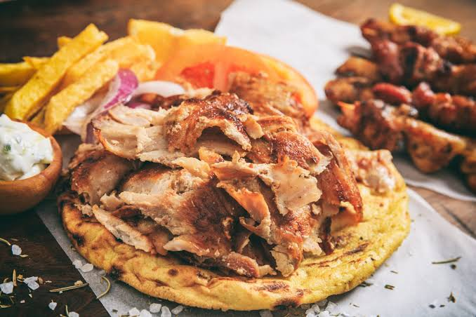

Παραδοσιακή Τέχνη στο Ψήσιμο & Αγνές Πρώτες Ύλες
Καλωσορίσατε στον «Σαλονικιό Γύρο», το αγαπημένο στέκι της Θεσσαλονίκης στην ιστορική συνοικία στα Λαδάδικα. Από το 1998, ετοιμάζουμε καθημερινά τον πιο ζουμερό, χειροποίητο γύρο χοιρινό και κοτόπουλο, μαριναρισμένο με μυστικά μπαχαρικά και εκλεκτά μυρωδικά της Μακεδονίας. Κάθε σούβλα στήνεται το πρωί στο κατάστημά μας από 100% φρέσκα ελληνικά κρέατα και ψήνεται αργά μέχρι να αποκτήσει την τέλεια τραγανή κρούστα.
Στη Θεσσαλονίκη το σάντουιτς είναι ιεροτελεστία. Οι αφράτες, χορταστικές μας πίτες ψήνονται στα κάρβουνα την ώρα της παραγγελίας σας και γεμίζουν γενναιόδωρα με φρεσκοκομμένο γύρο, τραγανές τηγανητές πατάτες Νάξου και τις φημισμένες χειροποίητες αλοιφές μας — από παραδοσιακό τζατζίκι και τυροκαυτερή μέχρι αυθεντική σως μουστάρδας και πάπρικας.
Γιατί Ξεχωρίζει ο Γύρος μας:
- 100% εκλεκτά ελληνικά κρέατα ημέρας από πιστοποιημένες φάρμες της Βόρειας Ελλάδας.
- Αυθεντική Σαλονικιώτικη αφράτη πίτα, ψημένη στη σχάρα με ελαιόλαδο και ρίγανη.
- Χειροποίητες αλοιφές και φρέσκες πατάτες που κόβονται και τηγανίζονται καθημερινά.
- Ζεστή φιλοξενία στα Λαδάδικα (Κατούνη 14) και γρήγορη εξυπηρέτηση για πακέτο ή τραπέζι.
 Πίτα Γύρος Σαλονικιώτικη
Πίτα Γύρος Σαλονικιώτικη
 Χορταστικές Μερίδες
Χορταστικές Μερίδες
 Σουβλάκια & Σουτζουκάκια Σχάρας
Σουβλάκια & Σουτζουκάκια Σχάρας
Πεινάσατε ή Έχετε Ερωτήσεις;
Καλέστε μας για κράτηση ή παραγγελία στο 2310 555 890 ή στείλτε μας email στο info@salonikiosgyros.gr
Υπερήφανος υποστηρικτής των τοπικών παραγωγών της Κεντρικής Μακεδονίας. Όλα μας τα προϊόντα παρασκευάζονται καθημερινά στο εργαστήριό μας στη Θεσσαλονίκη.
Πίτες & Σάντουιτς Θεσσαλονίκης


Χορταστικές Μερίδες
Σαλάτες, Αλοιφές & Ποτά
Από το 1998 στην Καρδιά της Θεσσαλονίκης
Η ιστορία του «Σαλονικιού Γύρου» ξεκίνησε το 1998 στον πεζόδρομο της οδού Κατούνη στα ιστορικά Λαδάδικα. Με μεράκι για το καλό κρέας και σεβασμό στη γαστρονομική παράδοση της Θεσσαλονίκης, δημιουργήσαμε έναν φιλόξενο χώρο όπου ντόπιοι, φοιτητές και επισκέπτες απολαμβάνουν αυθεντικό χειροποίητο γύρο.
Διεύθυνση
Κατούνη 14, Λαδάδικα
Τ.Κ. 546 25, Θεσσαλονίκη
5 λεπτά με τα πόδια από την Πλατεία Αριστοτέλους και το Λιμάνι.
Ωράριο Λειτουργίας
Δευτέρα – Πέμπτη: 12:00 – 01:00
Παρασκευή – Σάββατο: 12:00 – 03:00
Κυριακή: 12:00 – 00:00
Τηλέφωνα Επικοινωνίας
Τηλ. Παραγγελιών: 2310 555 890
Τηλ. Κρατήσεων: 2310 555 891
Email: info@salonikiosgyros.gr
Η Πολιτισμική Σημασία του Ελληνικού Φαγητού
Στην Ελλάδα, το φαγητό δεν είναι απλώς μια βιολογική ανάγκη, αλλά μια βαθιά ριζωμένη κοινωνική ιεροτελεστία και η απόλυτη έκφραση της ελληνικής φιλοξενίας. Από τα αρχαία συμπόσια μέχρι το σύγχρονο κυριακάτικο οικογενειακό τραπέζι και τις παρέες στα Λαδάδικα, η πράξη του να μοιράζεσαι το φαγητό («συν-τρώγω») αποτελεί τον πυρήνα της συλλογικής μας ταυτότητας. Το τραπέζι είναι ο χώρος όπου σφυρηλατούνται οι ανθρώπινες σχέσεις, γιορτάζονται οι χαρές, συζητούνται οι ιδέες και μεταδίδονται οι παραδόσεις από γενιά σε γενιά.
Η ελληνική γαστρονομία βασίζεται στη φιλοσοφία της απλότητας, της εποχικότητας και της εκλεκτής πρώτης ύλης. Το εξαιρετικό παρθένο ελαιόλαδο, η ρίγανη των ελληνικών βουνών, το φρέσκο ζυμωτό ψωμί, η φέτα και τα μυρωδικά της μεσογειακής γης συνθέτουν γεύσεις που κουβαλούν αιώνες ιστορίας. Στη Θεσσαλονίκη ειδικότερα — μια πόλη-σταυροδρόμι λαών και πολιτισμών — η μαγειρική τέχνη εμπλουτίστηκε με αρώματα της Ανατολής, της Κωνσταντινούπολης και της Μικράς Ασίας, αναδεικνύοντας την πόλη σε γαστρονομική πρωτεύουσα της Ελλάδας.
Πώς Ξεκίνησε η Παράδοση του Γύρου
Η ιστορία του γύρου έχει βαθιές ιστορικές ρίζες που φτάνουν μέχρι την αρχαιότητα και τον «οβελία» — το κρέας που ψηνόταν περασμένο σε σούβλα πάνω από αναμμένα κάρβουνα, όπως περιγράφεται ήδη στα ομηρικά έπη. Με το πέρασμα των αιώνων στην ευρύτερη περιοχή της Ανατολικής Μεσογείου και της Μικράς Ασίας, η τεχνική εξελίχθηκε στην κάθετη περιστρεφόμενη σούβλα του 19ου αιώνα, η οποία επέτρεπε στο κρέας να ψήνεται ομοιόμορφα από τη θράκα ενώ οι χυμοί του κατέβαιναν αργά, διατηρώντας το εσωτερικό τρυφερό και ζουμερό.
Το καθοριστικό σημείο καμπής για την Ελλάδα ήρθε τη δεκαετία του 1920, μετά τη Μικρασιατική Καταστροφή και την ανταλλαγή πληθυσμών το 1922–1923. Οι Έλληνες πρόσφυγες από τη Σμύρνη, την Κωνσταντινούπολη και τον Πόντο εγκαταστάθηκαν στη Θεσσαλονίκη και την Αθήνα, φέρνοντας μαζί τους την τέχνη του κάθετου ψησίματος, τα εκλεκτά μπαχαρικά και τα μυστικά του μαριναρίσματος. Στις γειτονιές της Θεσσαλονίκης, η παράδοση αυτή προσαρμόστηκε στα τοπικά γούστα με την προσθήκη του χοιρινού κρέατος και του κοτόπουλου, τυλιγμένων σε αφράτη χειροποίητη πίτα μαζί με φρεσκοκομμένες πατάτες και δροσερό τζατζίκι ή σως.
Το όνομα «γύρος» καθιερώθηκε στην ελληνική γλώσσα από το ρήμα «γυρίζω», περιγράφοντας ακριβώς τη συνεχή περιστροφή της σούβλας γύρω από τον άξονά της. Σήμερα, ο Σαλονικιώτικος γύρος δεν είναι απλώς το πιο αγαπημένο street food της Ελλάδας, αλλά ένα ζωντανό κομμάτι γαστρονομικής κληρονομιάς που ενώνει το παρελθόν με το παρόν σε κάθε μπουκιά.
Οι Σταθμοί της Παράδοσης:
- Αρχαία Ελλάδα: Η παράδοση του ψησίματος κρέατος σε σούβλα («οβελός») πάνω από κάρβουνα στα αρχαία συμπόσια.
- 1922–1923 (Μικρασιάτες Πρόσφυγες): Οι πρόσφυγες φέρνουν στη Θεσσαλονίκη την τέχνη της κάθετης σούβλας και την πλούσια κουλτούρα των μπαχαρικών.
- Δεκαετίες 1950–1970: Καθιερώνεται η ελληνική ονομασία «Γύρος» και γεννιέται το θρυλικό Σαλονικιώτικο σάντουιτς σε αφράτη πίτα.
- 1998 – Σήμερα: Ο «Σαλονικιός Γύρος» στα Λαδάδικα συνεχίζει πιστά την αυθεντική χειροποίητη παράδοση.